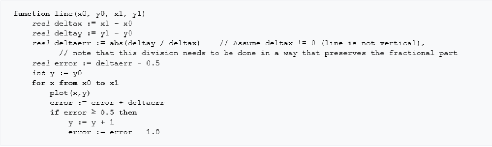

The Logo Of Shandong Univerdity
In this experiment, the main algorithm are Breseman and scan line filling algorithm.
Bresenham's line algorithm is an algorithm that determines the points of an n-dimensional raster that should be selected in order to form a close approximation to a straight line between two points. During the class, we had basicly learned about it. The fake code can be expressed as follows,where the (x0,y0)is the startpoint and (x1,y1) is the end point of the line. Once we know the two points, we can easily draw it out.

As to the second algrithom---scan line seed filling algorithm it no longer recursively processes the adjacent points of "4-Unicom" and "8-Unicom", but rather processes the "4-link" and the "4-link" by padding the pixel segment along the horizontal scan line "8-Unicom" adjacent points. In this process, it is only necessary to press the starting point position of each horizontal pixel segment onto a special stack without pressing all the adjacent points that are not yet processed around the current position onto the stack, so that we can save stack space.
After finished the above two methods, we need to measure the points of the logo. Once we draw it out, then excute the scan line seed filling algorithm .In my code, the seed_fill methods needs two arguments-----the start point position (startx,starty).I initialized the boder color as red, and establish a stack to set seed points, we start the filling process.